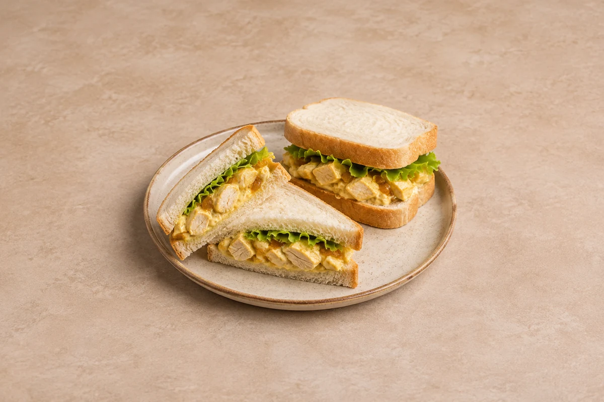

Lunches
Coronation Chicken Sandwiches
Soft white bread filled with chicken breast, crisp lettuce and a creamy mild curry and mango chutney dressing. Serves 2.
Time to allow: 27 min total
Allow about 15–20 minutes for the cooked chicken to cool before mixing with the dressing.
Prep15 mins
Cook12 mins
people
Ingredient quantities update automatically

Ingredients
Sandwiches
Coronation dressing
Method
Prepare the chicken
Slice thick chicken breasts horizontally into thinner cutlets. Rub with the oil and season lightly with salt and pepper.Cook and cool
Heat a frying pan over a medium-high heat. Cook the chicken for about 4–6 minutes per side, depending on thickness, until golden and cooked through. Rest for 5 minutes, then leave to cool before chopping into small pieces.Toast the curry powder
While the chicken cools, warm the curry powder in a small dry pan over a low heat for 20–30 seconds, stirring, until fragrant. Tip into a mixing bowl and let it cool.Make the dressing
Mix the mayonnaise, Greek yoghurt, mango chutney and lemon juice into the cooled curry powder. Taste and add black pepper or a little salt if needed.Coat the chicken
Fold the cooled, chopped chicken into the dressing until evenly coated.Build the sandwiches
Butter the bread lightly. Divide the lettuce and coronation chicken between half the slices, top with the remaining bread and cut in half to serve.
Tips & leftovers
Storage & leftovers
Keep the chicken filling in a covered container in the fridge and use within 48 hours of cooking the chicken. Store lettuce separately and assemble just before eating; made-up sandwiches are best the same day.
Freezing
Freeze the cooled cooked chicken before adding the dressing, in labelled portions, for up to 2 months for best quality. Freeze bread separately. The mayonnaise and yoghurt dressing may split, and lettuce loses its crunch, so make those fresh.
Reheating
This filling is best served cold. After defrosting plain cooked chicken in the fridge, mix with freshly made dressing and eat within 24 hours. Do not warm the dressed sandwich.
Substitutions
Use plain yoghurt instead of Greek yoghurt, or replace the yoghurt with extra mayonnaise for a richer dressing. Apricot chutney can replace mango chutney. Try rolls or wraps in place of sliced bread.
Keeping leftovers safe
Cool cooked leftovers in small portions and refrigerate within 2 hours. Keep the fridge at 0–5°C and the freezer around −18°C. Freeze suitable leftovers promptly. Defrost fully in the fridge and use within 24 hours. Reheat only once, until steaming hot all the way through. Follow any shorter use-by or opened-pack instructions; using older cooked ingredients does not restart their storage time.
Food-safety guidance: Food Standards Agency: chilling and freezing · reheating leftovers.